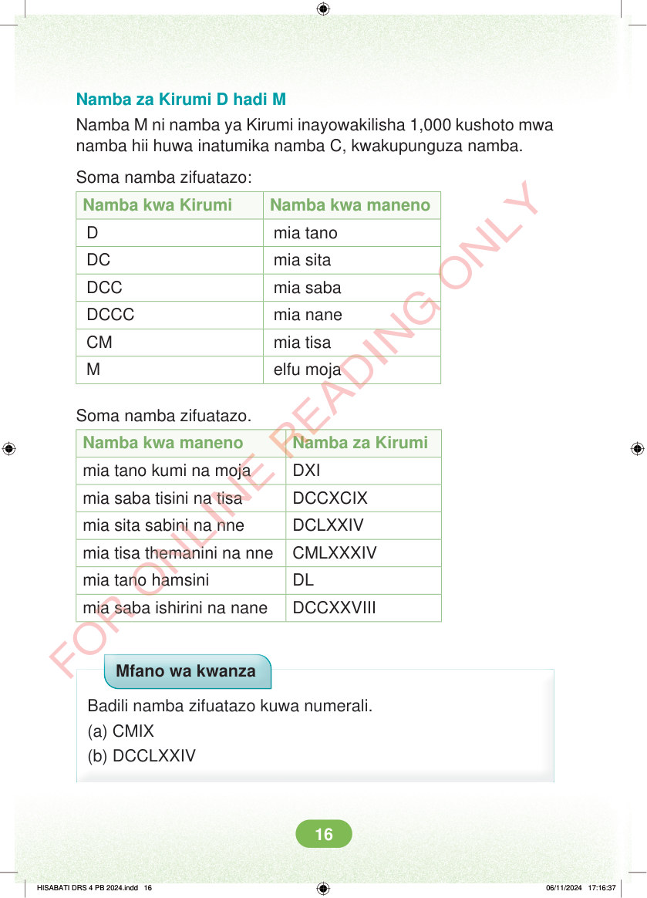

Namba za Kirumi D hadi M Namba M ni namba ya Kirumi inayowakilisha 1,000 kushoto mwa namba hii huwa inatumika namba C, kwakupunguza namba. Soma namba zifuatazo: Namba kwa Kirumi Namba kwa maneno D mia tano DC mia sita DCC mia saba DCCC mia nane CM mia tisa M elfu moja Soma namba zifuatazo. Namba kwa maneno Namba za Kirumi mia tano kumi na moja DXI mia saba tisini na tisa DCCXCIX mia sita sabini na nne DCLXXIV mia tisa themanini na nne CMLXXXIV mia tano hamsini DL mia saba ishirini na nane DCCXXVIII Mfano wa kwanza Badili namba zifuatazo kuwa numerali. (a) CMIX (b) DCCLXXIV HISABATI DRS 4 PB 2024.indd 16 HISABATI DRS 4 PB 2024.indd 16 06/11/2024 17:16:37 06/11/2024 17:16:37